40 Years of Achievement
Chronology
1980s
1986

1987
ゆうぽうと6公演 / 大阪フェス / 愛知厚生年金

1988
厚生年金会館6公演 / 大阪 / 神戸国際会館

1988
パリ/ユシェット座「スポーツと気晴らし/エリックサティ」
ラフォーレ原宿 8公演
1989
ゆうぽうと7公演 / 大阪フェス

1990s
1990
リンゼイケンプカンパニー 3演目同時開催
ゆうぽうと 8公演 —「真夏の夜の夢」「フラワーズ」「アリス」
1991
玉川高島屋
1991
ゆうぽうと4公演
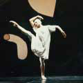
1992
コクーン8公演 / 近鉄劇場 / 愛知 / 北海道
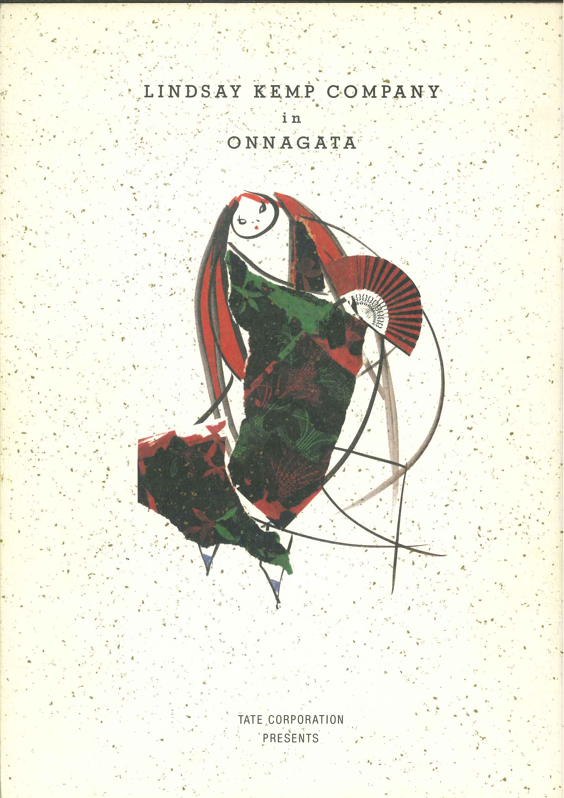
1992
スティーブン・バーコフ「変身」主演：宮本亜門
アートスフィア
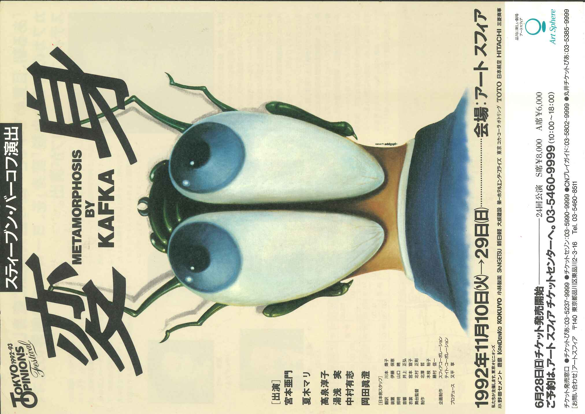
1993
ニュー・エトワール・ガラ
アートスフィア / 大阪フェス
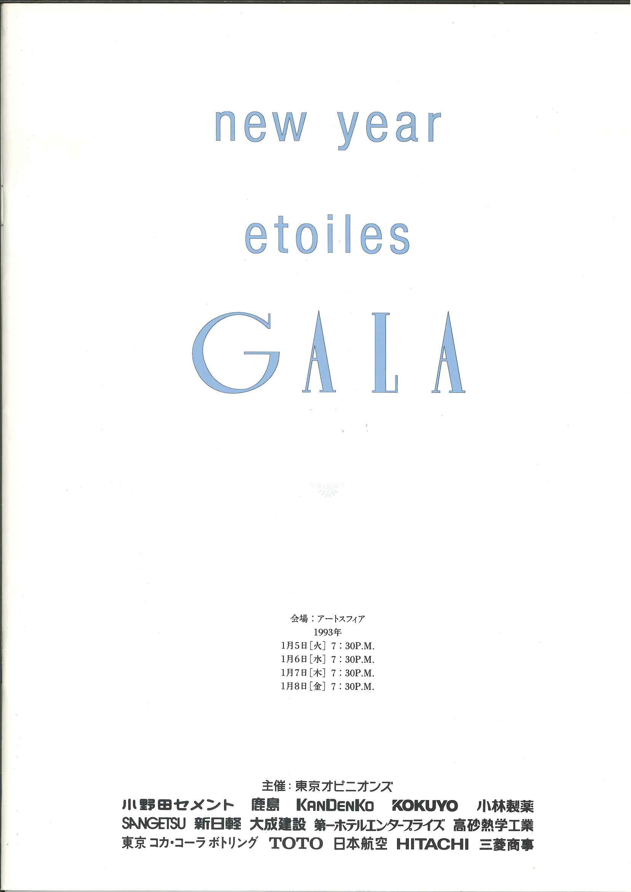
1993
アートスフィア 7回公演
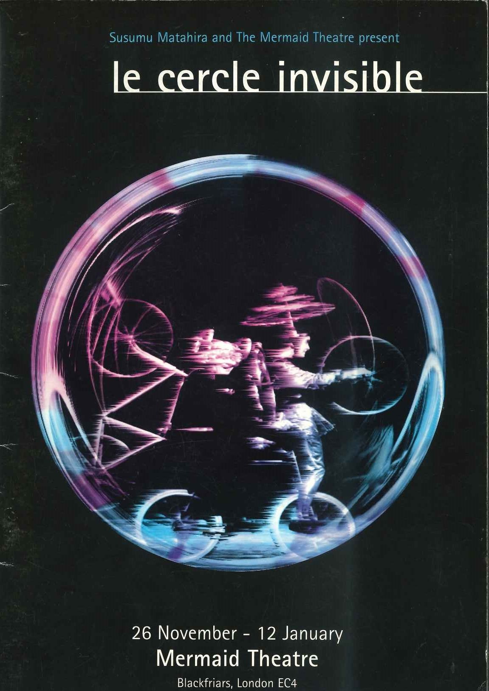
1994
1994
ゆうぽうと / 愛知芸術 / サンケイホール
1995
ゆうぽうと5公演 / 近鉄劇場 / 愛知芸術
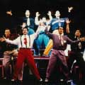
1995
アンフォゲッタブル ロンドン初演
Garrick Theatre / London — 3か月ロングラン
1996
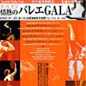
1996
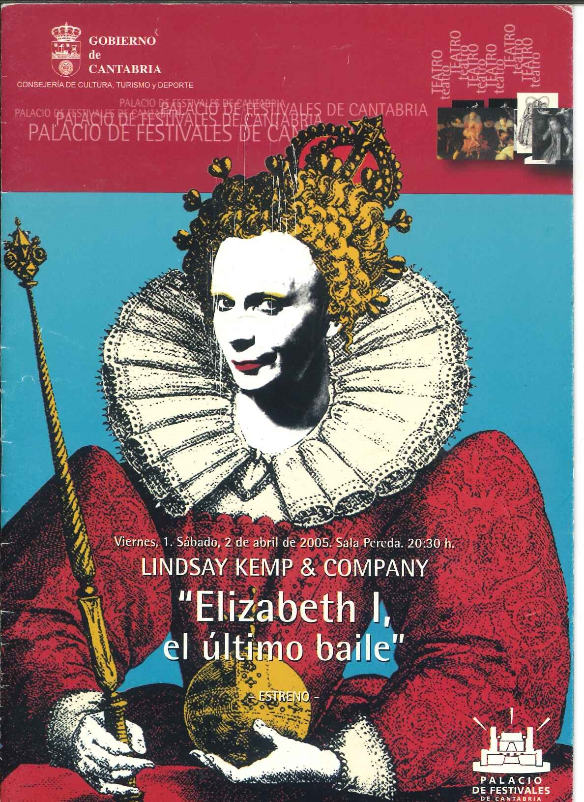
1997
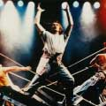
1998
昭和記念 / 愛知芸術 / 大阪フェス / 福岡サンパレス / 東京芸術
1999
東京フォーラム（Aホール）/ オーチャードホール
1999
オーチャード / 厚生年金会館
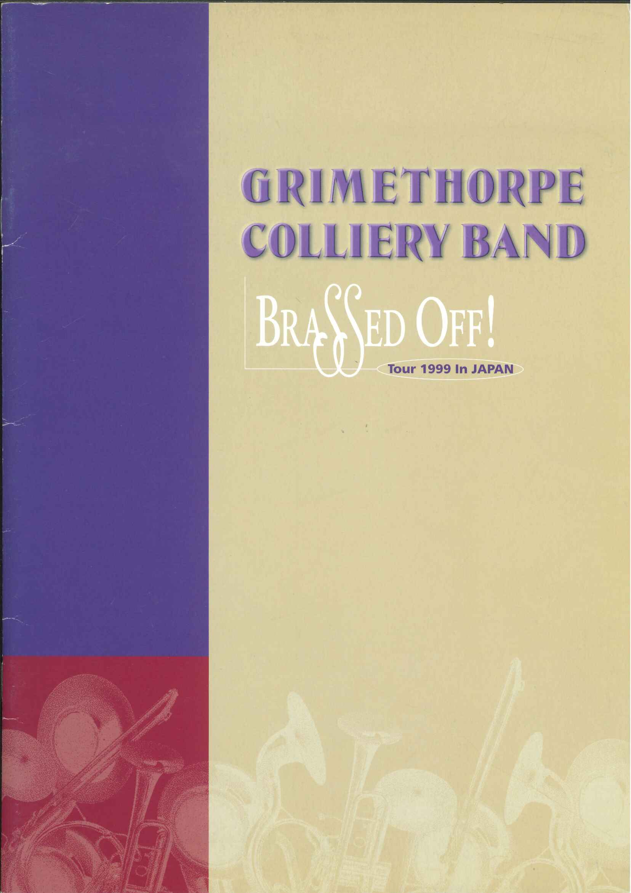
1999
タップドッグス ファイナル
ゆうぽうと4公演 / 大阪
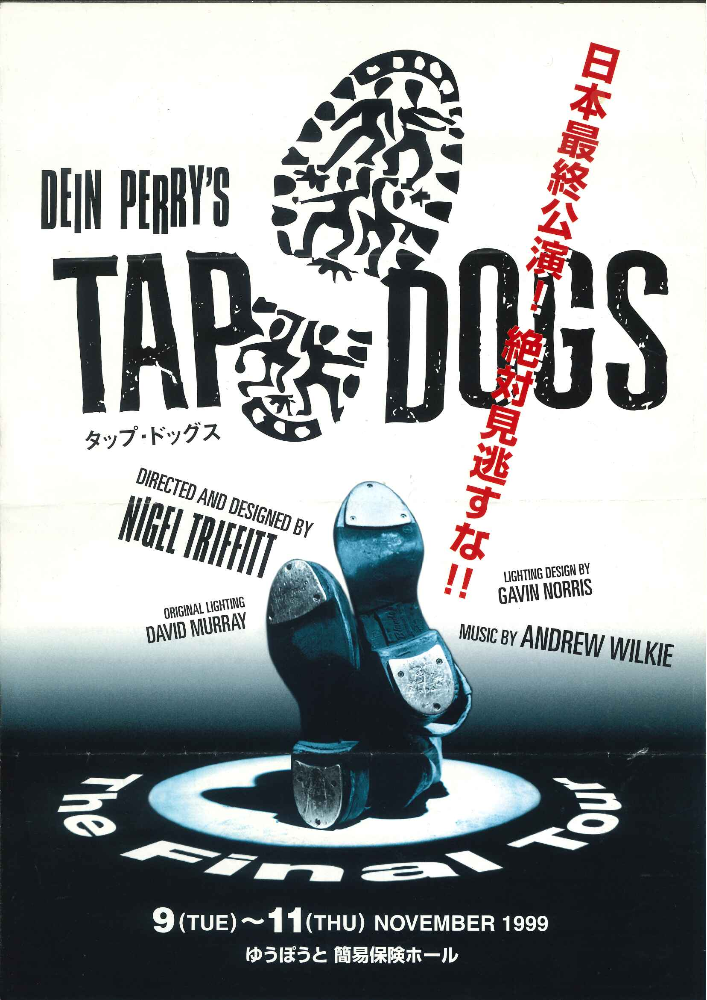
1999
アンフォゲッタブル / Monrow Kent版
博品館14公演 / ドラマシティ7公演
2000s
2000
2000
フラメンコ「カルメン」
オーチャード6公演 / 大阪フェス / 愛知芸術
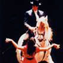
2003
ウモジャ 初演 / ブエノス・アイレス・タンゴ 初演
オーチャード / 全国15公演
2003
デビット・ヘルフゴット ファイナル / ハーレム・ゴスペル・クアイアー 初演
東京 / 大阪 / 名古屋
2004
東京文化会館 / 文京シビック / 全国8公演

2005
ゆうぽうと4公演 / 全国10公演
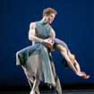
2006
全国15公演
2007
ハーレムゴスペル 5回目 / デビット・ヘルフゴット
全国公演 / 立川 / 神戸
2008
コクーン10公演
2008
サンクト・ペテルブルグ・バレエ / グローリーゴスペル 初演
文化会館 / 神奈川県民 / 全国15公演
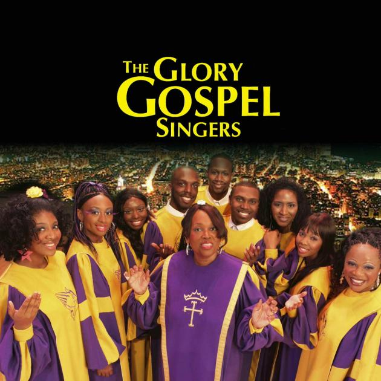
2009
ソウエット・ゴスペル 初演 / ブルース・ブラザーズ
関東10公演 / 全国14公演
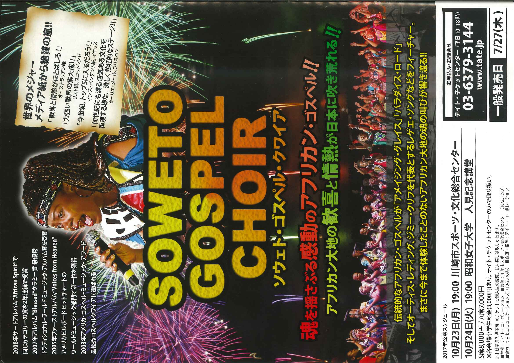
2010s
2010
2011
グローリーゴスペル / ゴスペルチャリティサミット
全国15公演 / 渋谷公会堂
2012
全国20公演
2013
ジャン・ジャック・ジュスタフレ 初演 / フォン・トラップ・シンガーズ
全国5公演 / 全国15公演
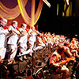
2014
ビリーヴォーン楽団 / ジャン・ジャック・ジュスタフレ
関東4 / 全国13公演
2015
東京オペラシティ / 全国15公演
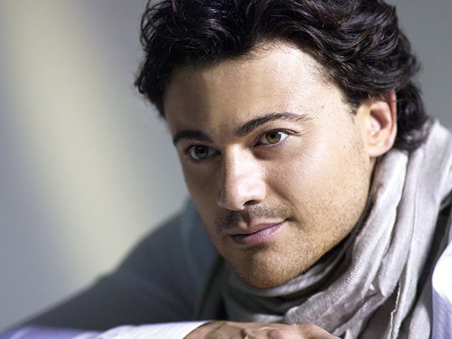
2016
パリ国立オペラ座少年少女合唱団 / ペレスプラード楽団
東京芸術劇場 / 神奈川県民 / 大阪フェス
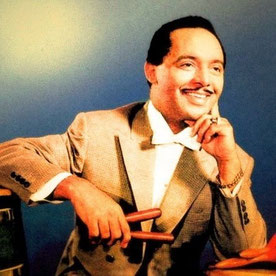
2019
2020s
2020
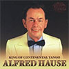
2025
すみだ / サントリーホール / 大阪シンフォニー / 全国25都市